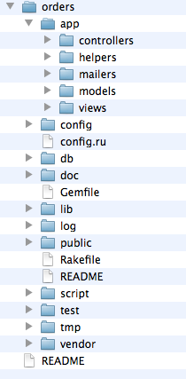

rails new orders
Este comando genera una estructura bajo la carpeta orders
Rails vienen con prototype como framework javascript (en la versión 3.1 utilizará jquery por defecto).
Gracias a un gem vamos a poder cambiar de framework con muy poco esfuerzo, del siguiente modo:
Primero agregamos al Gemfile:
gem 'jquery-rails', '>= 1.0.3'
Luego actualizamos nuestras dependencias ejecutando:
bundle install
Y por último:
rails generate jquery:install --ui
El producto tendrá, inicialmente, un nombre, una descripción y un precio unitario entonces ejecutamos:
rails g scaffold product name:string description:text price:decimal
Algo similar realizamos para order e item
rails g model item product:references quantity:integer
rails g scaffold order description:text
rails g migration add_items_to_orders
class AddItemsToOrders < ActiveRecord::Migration
def self.up
add_column :items, :order_id, :integer
end
def self.down
remove_column :items, :order_id
end
end
You can download this project in either zip or tar formats.
You can also clone the project with Git by running:
$ git clone git://github.com/maxidr/mug_rails_2